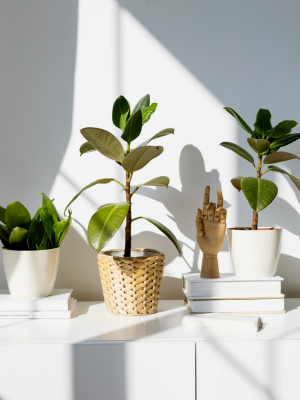
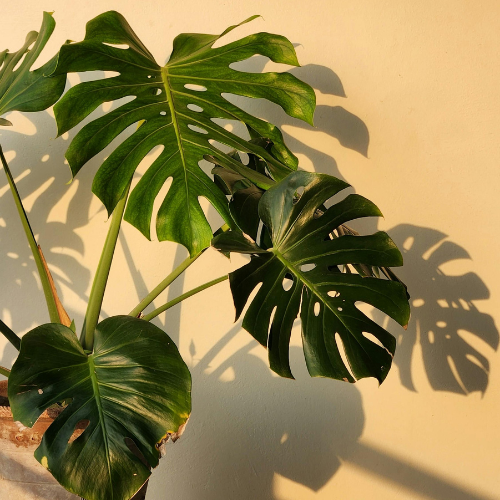
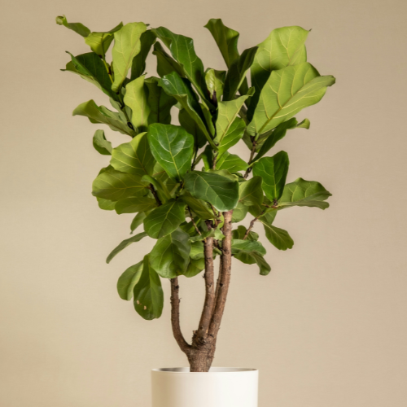
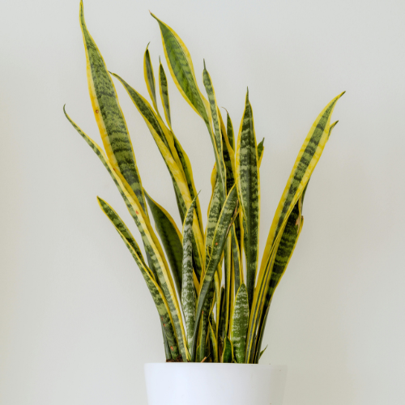
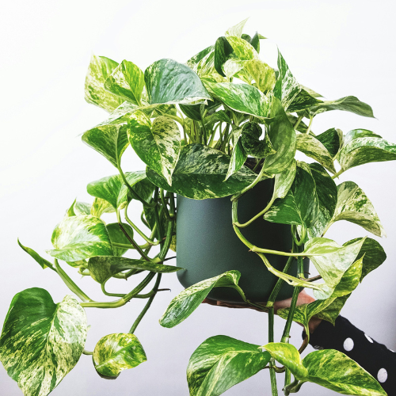
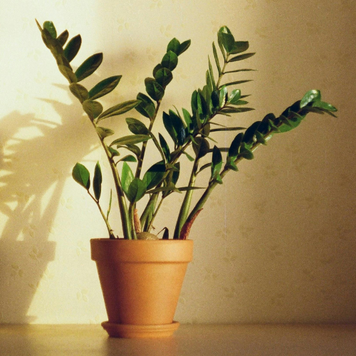
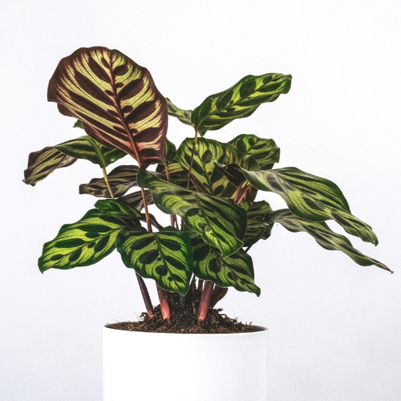
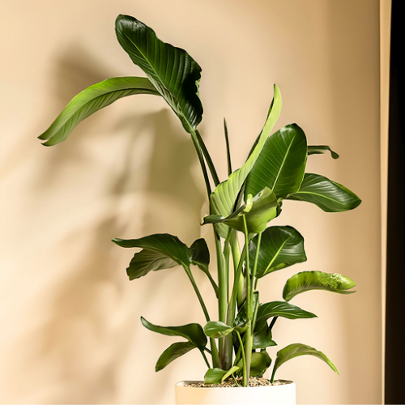
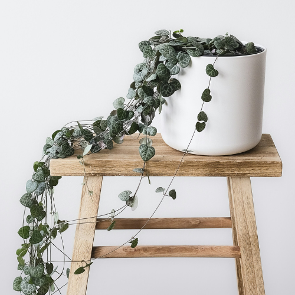
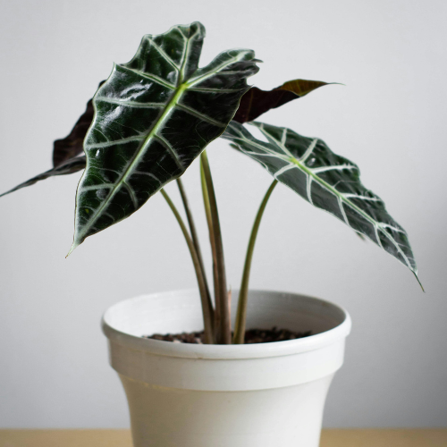

10 Trending Houseplants Everyone Wants (and How to Take Care of Them)
27 March 2026
Houseplants are more popular than ever, and it’s easy to see why. They make small apartments feel alive, improve the mood of a room, and help create that calm atmosphere so many people are looking for at home. Even a single plant can soften a space and make it feel more personal and inviting.
But with so many plant trends on social media, it can be hard to know which ones are actually worth bringing into your space — and how to keep them alive once you do. Not every trending plant is as easy as it looks, especially in real apartments with limited light or busy routines.
Here are 10 trending houseplants people love right now, plus simple care tips to help them thrive. The ⭐ rating shows how beginner-friendly each plant is, with 5 stars being extremely easy to care for (low maintenance, tolerant of light and watering fluctuations) and 1 star being more challenging (requires precise light, humidity, or watering routines). This helps you quickly see which plants are great for beginners versus those that need more attention.
1. Monstera Deliciosa (Swiss Cheese Plant) ⭐⭐⭐⭐☆

The Monstera is one of the most recognizable houseplants, known for its large, split leaves that instantly give a room a lush, tropical feel. Native to the rainforests of Central America, it naturally grows by climbing trees, which is why it can get quite big indoors if given the right support.
Those iconic holes in the leaves (called fenestrations) aren’t just for looks — they help the plant handle heavy rain and wind in the wild by letting water and light pass through.
If you want to learn more about this iconic plant, here’s a guide where you’ll discover the three most popular Monstera varieties, how they grow, and how to care for them at home.
Why it’s trending:
- Bold, sculptural leaves that stand out in any room
- Works well in both modern and rustic interiors
- Grows quickly with the right light and space
- Instantly gives a “green” feel even with just one plant
Care tips:
- Light: Bright, indirect light; can tolerate some direct sun but avoid harsh midday exposure
- Water: Let the top 2-5 cm of soil dry out between watering
- Soil: Well-draining mix (potting soil + perlite works well)
- Support: Use a moss pole or stake to encourage climbing and larger leaf development
- Maintenance: Wipe leaves regularly to remove dust and improve photosynthesis
💡 Tip: If your Monstera isn’t developing those split leaves, it usually means it needs more light or a bit more time to mature.
2. Fiddle Leaf Fig (Ficus Lyrata) ⭐⭐⭐☆☆

The Fiddle Leaf Fig became famous on Pinterest and Instagram, and it’s still a favorite for people who want a statement plant in their living room. Native to West African rainforests, it grows as a tall tree in nature, which explains its upright shape and large, dramatic leaves indoors.
Those big, violin-shaped leaves aren’t just aesthetic — they’re designed to capture as much light as possible in dense forest environments, which is why this plant can be a bit demanding about lighting at home.
Why it’s trending:
- Tall, tree-like shape that fills empty corners beautifully
- Large, glossy leaves that stand out in photos and real spaces
- Creates a clean, “designer” look even in simple apartments
Care tips:
- Light: Bright, indirect light; can handle some morning or evening sun
- Water: Let the top 2-5 cm of soil dry out between waterings; avoid overwatering
- Soil: Well - draining mix, such as potting soil with perlite
- Support: Stake for taller plants if needed
- Maintenance: Wipe leaves occasionally to remove dust and encourage photosynthesis
💡 Tip: Brown spots on leaves are often a sign of overwatering or inconsistent care — this plant prefers a steady routine.
3. Snake Plant (Sansevieria) ⭐⭐⭐⭐⭐

If you’re new to plants or tend to forget about watering, the Snake Plant is one of the safest choices you can make. It’s originally from arid regions of West Africa, which explains why it can handle dry air, low water, and less-than-perfect conditions.
One interesting fact: Snake Plants use a special process called CAM photosynthesis, which allows them to release oxygen at night instead of during the day — making them a popular choice for bedrooms.
Why it’s trending:
- Extremely low maintenance and beginner-friendly
- Clean, upright shape that works well in small apartments
- Tolerates low light better than most houseplants
- Fits minimalist, modern, and rustic spaces
Care tips:
- Light: Tolerates low light but grows faster in bright, indirect light
- Water: Allow soil to dry completely between waterings; avoid overwatering
- Soil: Well-draining cactus or succulent mix
- Pot: Use a container with drainage holes to prevent root rot
- Maintenance: Wipe leaves occasionally to remove dust and maintain photosynthesis
💡 Tip: If the leaves start to feel soft or mushy, it’s usually a sign of too much water.
4. Pothos (Epipremnum Aureum) ⭐⭐⭐⭐⭐

Pothos is a tropical vine native to Southeast Asia and the Pacific islands, where it climbs trees and can grow over 10 meters long in the wild. Indoors, it’s usually seen trailing from shelves, but when given vertical support (like a moss pole), it shifts into a climbing growth pattern and produces larger, more mature leaves — sometimes even developing natural splits.
One interesting fact: pothos rarely flowers indoors and is considered a “shy-flowering” plant, even in nature. Most of what we grow are cultivated forms selected for their leaf color and resilience.
It’s also known for being highly adaptable because it can regulate water loss efficiently, which is why it tolerates irregular watering better than many houseplants.
Why it’s trending:
- Extremely adaptable to different light conditions
- Fast growth rate (can grow several feet per year indoors)
- Easy propagation from stem cuttings (nodes root quickly in water)
- Wide variety of cultivars: Golden, Marble Queen, Neon, Cebu Blue
- Popular for vertical “green wall” and moss pole setups
Care tips:
- Light: Medium to bright indirect light is ideal (variegated types need more light to keep their patterns)
- Water: Let the top 2-5 cm of soil dry out between watering
- Soil: Well-draining mix (standard potting soil + perlite works well)
- Pruning: Trim vines to encourage branching and fuller growth
- Support: Climbing support encourages larger leaf development
💡 Tip: When pothos is grown vertically on a moss pole (instead of trailing), it can produce much larger, more mature leaves — closer to how it grows in nature.
5. ZZ Plant (Zamioculcas Zamiifolia) ⭐⭐⭐⭐⭐

The ZZ Plant is loved for its glossy leaves and ability to survive in less-than-ideal conditions. It comes from drought-prone areas of East Africa and stores water in thick underground rhizomes, which makes it extremely resilient.
It’s one of the best choices if your apartment doesn’t get much natural light.
Why it’s trending:
- Very drought tolerant and low effort
- Naturally neat and structured shape
- Perfect for offices and low-light corners
- Looks polished without needing much care
Care tips:
- Light: Prefers bright, indirect light but tolerates low-light conditions
- Water: Allow soil to dry completely between waterings; avoid overwatering
- Soil: Well-draining potting mix, such as cactus or succulent blend
- Pot: Ensure container has drainage holes to prevent root rot
- Maintenance: Wipe leaves occasionally to maintain glossy appearance and photosynthesis
💡 Tip: Yellow leaves are often a sign of overwatering, not underwatering.
6. Rubber Plant (Ficus Elastica) ⭐⭐⭐⭐☆

The Rubber Plant is native to Southeast Asia, where it grows as a tropical evergreen tree reaching up to 30-40 meters tall. Indoors, it stays much smaller but still keeps its strong, upright structure, which comes from a single central stem that can branch over time.
Its thick, leathery leaves aren’t just aesthetic — they’re designed to store water and reduce moisture loss, making the plant more drought-tolerant than many tropical species. When new leaves form, they emerge from a protective sheath (stipule), which then falls off once the leaf opens — a normal (and often misunderstood) part of its growth cycle.
Another key detail: Ficus elastica produces a milky sap (latex), which helps protect it from pests in nature but can be mildly irritating to skin and toxic if ingested by pets.
Why it’s trending:
- Large, glossy leaves create strong visual contrast in interiors
- Upright, tree-like growth makes it ideal as a statement plant
- Slower, controlled growth compared to many tropical plants
- Comes in multiple cultivars: Burgundy (dark), Tineke (variegated), Ruby (pink tones)
- Works well in bright, minimalist spaces
Care tips:
- Light: Bright, indirect light; can tolerate some direct morning sun
- Water: Allow the top 3-5 cm of soil to dry before watering
- Soil: Well-draining mix to prevent root rot
- Rotation: Turn the plant regularly to keep balanced growth
- Cleaning: Wipe leaves to maintain photosynthesis and prevent dust buildup
💡 Tip: Leaf drop is usually a response to environmental stress (light changes, drafts, or overwatering) — not aging. Keep conditions stable, and avoid moving the plant too often.
7. Calathea (Prayer Plant Family) ⭐⭐☆☆☆

Calatheas are tropical plants native to Central and South America, where they grow on the forest floor under dense canopy. Their leaves are adapted to low, filtered light and often display highly detailed patterns caused by natural pigment variations. They belong to the Marantaceae family and are known for nyctinasty — a daily movement where leaves rise at night and lower during the day, driven by changes in water pressure in the plant’s cells.
Unlike many houseplants, Calatheas are considered more sensitive because they have thin leaves and fine root systems, making them more reactive to dry air, inconsistent watering, and minerals in tap water. Many species also have purple undersides, which help reflect light back through the leaf in low-light environments.
Why it’s trending:
- Highly detailed leaf patterns (natural variegation, not artificial)
- Visible day – night leaf movement (nyctinasty)
- Wide variety of species (Orbifolia, Medallion, Lancifolia)
- Works well in shaded interiors where other plants struggle
Care tips:
- Light: Medium to low indirect light (avoid direct sun)
- Water: Keep soil consistently slightly moist, not wet
- Humidity: Prefers 50-70%+ humidity for healthy leaves
- Water quality: Use filtered or distilled water to avoid leaf damage
- Soil: Well-draining mix that still retains some moisture
💡 Tip: Brown, crispy edges are usually caused by low humidity or mineral buildup from tap water — not just “underwatering.”
8. Bird of Paradise (Strelitzia) ⭐⭐⭐☆☆

Bird of Paradise is native to South Africa, where it grows in sunny, open environments. Indoors, it’s typically the species Strelitzia reginae or Strelitzia nicolai, both known for their large, paddle-shaped leaves. These leaves are structurally similar to banana plants and are designed to maximize light absorption in bright conditions.
In nature, mature plants produce striking orange and blue flowers that resemble a bird’s head, but flowering indoors is rare and requires very high light levels and maturity (often 4-6+ years). The plant grows from thick underground rhizomes, allowing it to store energy and recover from stress.
Leaf splitting is a natural adaptation — rather than being damaged, the plant allows wind to pass through by tearing along natural parallel veins, reducing stress on the stems.
Why it’s trending:
- Large, architectural leaves create strong visual impact
- Fast growth in bright conditions (can reach 1.5-2+ meters indoors)
- Works well as a statement plant in open spaces
- Complements modern, minimalist, and Scandinavian interiors
Care tips:
- Light: Needs very bright light; can handle several hours of direct sun
- Water: Let top 3-5 cm of soil dry out between watering
- Soil: Well-draining mix to prevent root rot
- Space: Give room for leaves to expand freely
- Cleaning: Wipe leaves to maintain efficient photosynthesis
💡 Tip: Slow growth or small leaves usually means not enough light — this plant needs more sun than most indoor plants to reach its full size.
9. String of Hearts (Ceropegia woodii) ⭐⭐⭐☆☆

String of Hearts is a trailing succulent native to South Africa and Zimbabwe, where it grows in rocky, well-drained environments. Its thin vines develop small tuber-like nodes along the stems and in the soil, which store water and allow the plant to survive extended dry periods.
The heart-shaped leaves are slightly succulent and often display a marbled pattern on top with purple undersides — an adaptation that helps regulate light absorption. In strong light, the plant can develop more intense pink or purple tones. It also produces small, tubular flowers that are designed to temporarily trap insects for pollination, a lesser-known trait of the genus.
Because of its fine root system and thin stems, it is more sensitive to overwatering than most houseplants but highly resilient to drought.
Why it’s trending:
- Distinct heart-shaped leaves with natural variegation
- Trailing growth ideal for shelves and hanging planters
- Compact root system fits small pots
- Subtle pink and purple tones in bright light
Care tips:
- Light: Bright, indirect light; tolerates some direct sun
- Water: Let soil dry out completely between watering
- Soil: Fast-draining cactus or succulent mix
- Pot: Ensure good drainage to prevent root rot
- Pruning: Trim vines to encourage fuller growth
💡 Tip: Those small beads along the vines are tubers — you can place them on soil to easily grow new plants without cutting.
10. Alocasia (Elephant Ear Plant) ⭐⭐☆☆☆

Alocasia plants are tropical species native to Southeast Asia and Eastern Australia, where they grow in warm, humid rainforest conditions. They develop from underground rhizomes, which store energy and allow the plant to go through periods of active growth and dormancy.
Their large, arrow-shaped leaves have pronounced veins that help transport water efficiently, supporting rapid growth in humid environments. Many varieties (like Polly or Frydek) have a velvety texture that increases surface area for light absorption. Unlike some houseplants, Alocasias tend to cycle leaves — it’s normal for older leaves to die off as new ones emerge.
They are considered more demanding because they require a balance of high humidity, consistent moisture, and warmth. They are also sensitive to overwatering due to their thick root systems.
Why it’s trending:
- Highly defined leaf shapes with strong vein contrast
- Wide range of unique varieties (Polly, Zebrina, Frydek, Dragon Scale)
- Fast growth during active season
- Works as a bold focal point in modern interiors
Care tips:
- Light: Bright, indirect light (avoid harsh direct sun)
- Water: Keep soil lightly moist but never waterlogged
- Humidity: Prefers 60%+ humidity for healthy growth
- Temperature: Keep warm; avoid drafts and cold exposure
- Soil: Well-draining mix that retains some moisture
💡 Tip: If your Alocasia suddenly loses leaves, it may be entering dormancy — reduce watering and wait for new growth rather than overwatering.
Choosing the Right Trending Plant for Your Home
It’s easy to fall in love with what you see online, but the best plant for your home is the one that matches your light, space, and routine. A low-maintenance plant that stays healthy will always look better than a trendy one that struggles.
For example, if your space gets limited light, options like Snake Plant or ZZ Plant will be much easier to maintain than something like a Fiddle Leaf Fig or Alocasia. If you love the look of trailing plants, Pothos or String of Hearts are great places to start without too much pressure.
Start with one or two plants, learn how they respond to your space, and grow your collection slowly. Pay attention to how often you water, where the light hits during the day, and what feels easy to maintain.
That way, your home will feel greener, calmer, and more personal — without turning plant care into a chore or something you feel behind on.